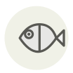

Splendid alfonsino (kinmedai) ✦ ◆
Béryx long (kinmedai)
| Latin name | Beryx splendens |
|---|---|
| Family | Fish & seafood |
| Origin | Izu peninsula & deep Pacific |
| Season | October – March |
| Flavour | Rich · Delicate · Sweet · Marine |
| Typical price | 60–120 €/kg |
What it is
Despite the -dai in its name it is no bream at all: the alfonsinos are a family of their own, hanging between four and six hundred metres down where their gold-backed eyes gather what light is left. The scarlet skin that sells the fish is camouflage — at that depth red reflects nothing and the animal reads as black.
In the kitchen
Never skin it: for sashimi pour boiling water over the skin side and drop it straight into iced water, which softens the scales without cooking the flesh beneath. Simmered, keep the liquid at a bare tremble — above a real boil the fat renders out and the flesh turns cottony.
Goes with
Hon-mirin Koikuchi shoyu Ginger Kombu Daikon Spring onion Junmai sake
In season alongside
Arctic char Crayfish Skate wing Albacore Northern sweet shrimp American lobster
Something wrong here, or missing? Tell us